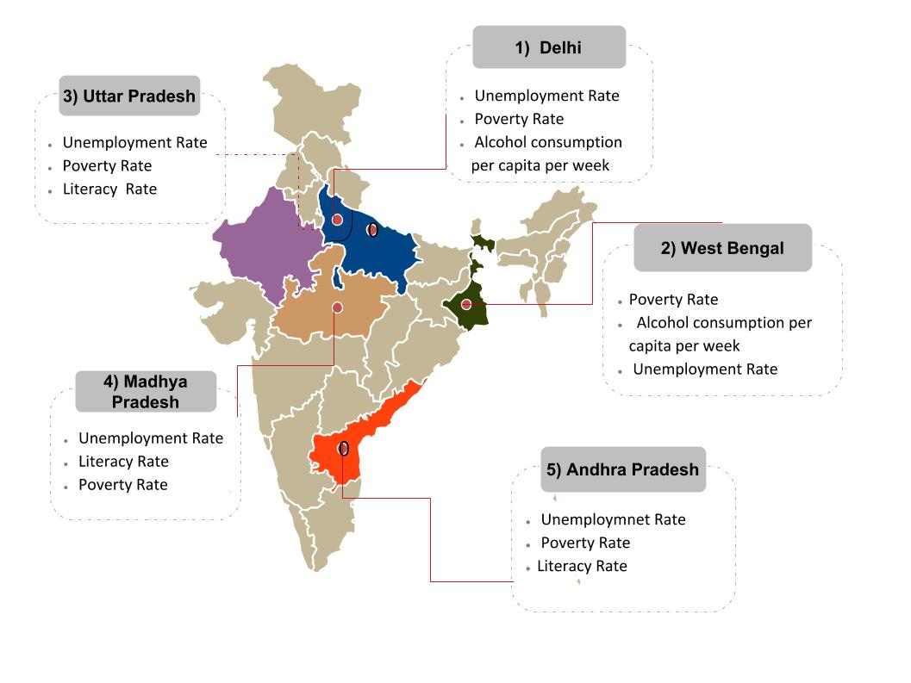

| MAP SHOWING HIGH DENSITY ZONES IN INDIA FOR RAPE CASES | LIST OF STATES ACCORDING TO RAPE CASES REGISTERED IN 2016 | ||
|  | 1> DELHI 20.25 % | 2> WEST BENGAL 19.85 % | 3> UTTAR PRADESH 9.30 % |
| 4> MADHYA PRADESH 9.17 % | 5> ANDHRA PRADESH 4.64 % | 6> RAJASTHAN 4.23 % | |
| 7> MAHARASHTRA 3.82 % | 8> ASSAM 2.88 % | 9> ODISHA 2.79 % | |
| 10> KERALA 2.58 % | 11> CHHATTISGARH 2.58 % | 12> HARYANA 2.03 % | |
| 13> JHARKHAND 1.96 % | 14> GUJARAT 1.84 % | 15> TRIPURA 1.70 % | |
| 16> TAMIL NADU 1.61 % | 17> UTTARAKHAND 1.57 % | 18> PUNJAB 1.41 % | |
| 19> JAMMU & KASHMIR 1.39 % | 20> BIHAR 1.34 % | 21> KARNATAKA 1.13 % | |
| 22> HIMACHAL PRADESH 0.57 % | 23> MEGHALAYA 0.32 % | 24> MIZORAM 0.21 % | |
| 25> NAGALAND 0.20 % | 26> SIKKIM 0.20 % | 27> GOA 0.18 % | |
| 28> ARUNACHAL PRADESH 0.13 % | 29> MANIPUR 0.11 % | ||